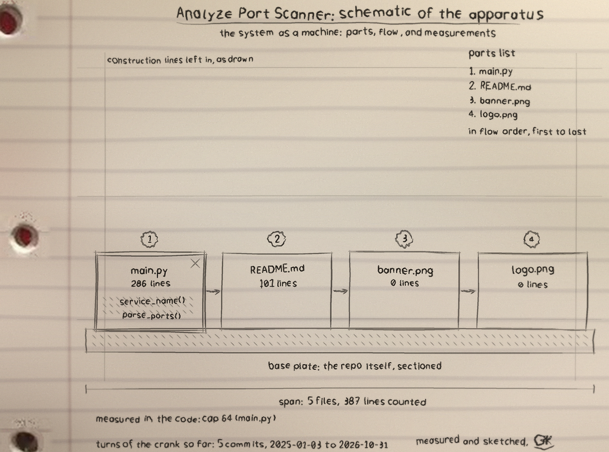

The board: my default probe set
These are the ports the scanner probes when you do not name your own. The red jacks are my watch list, the ports I always call out by name in a summary. Click any jack for its note. This board is the probe set itself, not a scan result.
Two jobs
scan
Plain TCP connect attempts against a host you name. A port counts as open when the handshake completes. An unresolvable host fails loudly instead of looking like a host with every port closed.
python3 main.py scan 127.0.0.1 --ports 22,80,443
analyze
Parses a scan file you already have: nmap normal output, nmap grepable output, or plain host:port lines. Lines it cannot understand are counted and reported as skipped, never guessed at. A file with nothing parseable fails, because a run that processed nothing does not get to call itself clean.
python3 main.py analyze scan-results.txt
Proof, recorded from real runs
Both panels below are output I captured while testing this exact code, not mock-ups.
Scanned 127.0.0.1 (127.0.0.1): 3 ports probed, 0 open nothing open in the probed set
A loopback scan of my own test machine. Three ports probed, none listening, and the tool says exactly that.
Analyzed scan-results.txt: 6 port rows across 3 hosts, 5 open 192.0.2.10: 22/tcp open ssh 23/tcp open telnet <- Telnet, plaintext remote shell 80/tcp closed http 192.0.2.20: 443/tcp open https 3306/tcp open mysql <- MySQL or MariaDB 192.0.2.30: 6379/tcp open redis <- Redis, often unauthenticated (1 lines not understood and skipped)
The analyze mode reading a mixed fixture file (nmap normal, grepable, and plain lines, plus one line nobody can parse) during the test run. The same run also caught both test listeners I opened on loopback and refused to overwrite its own input file.
The apparatus
The schematic I drew for this tool, from its real parts: one file, its parsers, its probe pool, and the watch list.

Get it
Python 3, standard library only, nothing to install. Source and full documentation: github.com/ShadowGuard-AI/analyze-port-scanner.